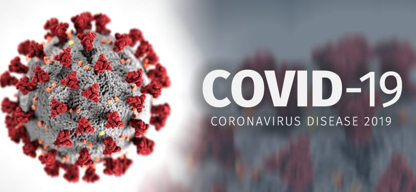
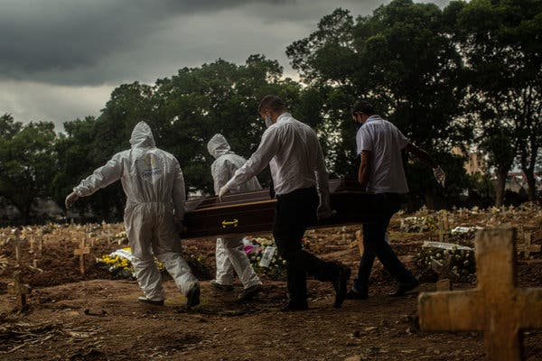
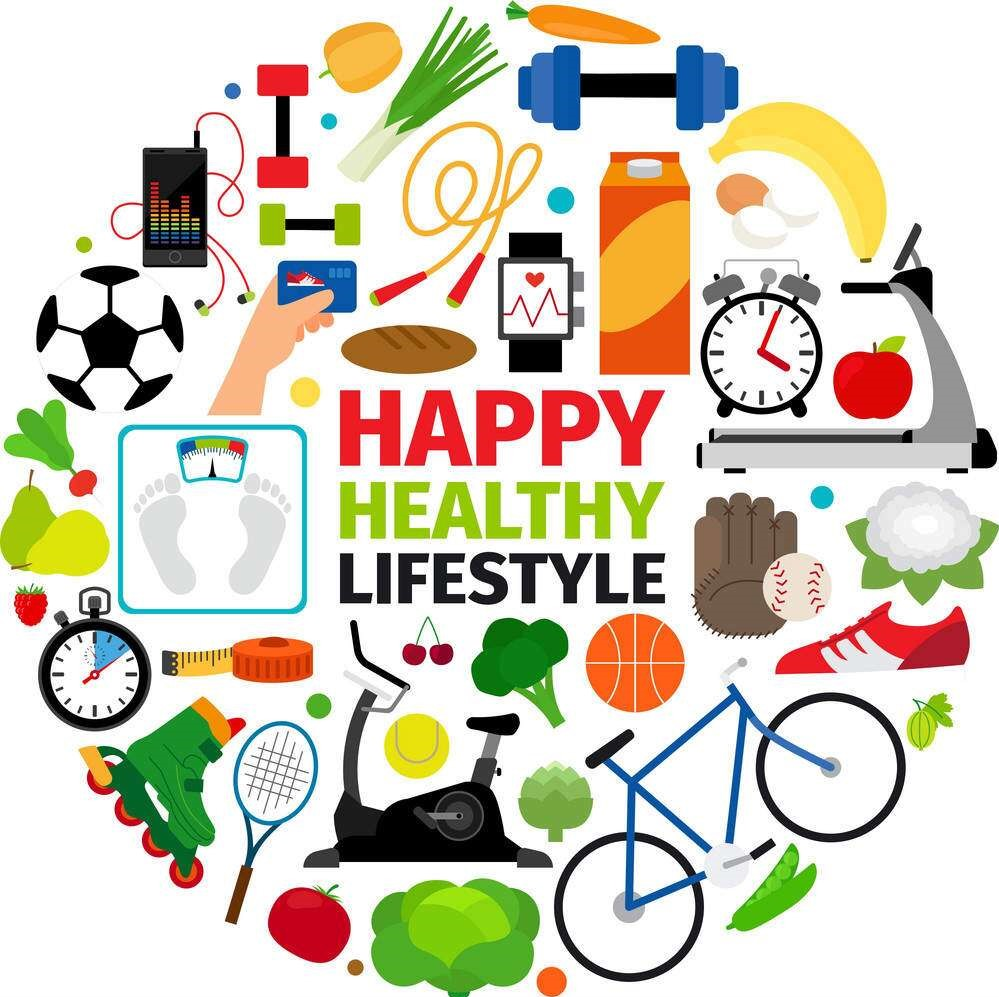

“You can’t control what’s goes on outside , but you CAN control what goes on inside”

‘COVID-19’ the word we have been hammered pass one year . This global pandemic
has affected over 136 million people worldwide and still continues. But every set
back is a setup for a come back. This world crises have proved that nothing is more
important than ones well being . Being healthy is a real wealth neither money nor
pieces of gold and silver.

There were cases of patients who had a lot of wealth but
didn’t have a single garland at their funeral , then what is point in running behind
money by ignoring health.According to WHO Individuals with pre-existing disorder
like diabetes, hypertension, cardiovascular disease , respiratory issues are at higher
risk of having COVID-19 as compared to people with robust immunity.
We are what we repeatedly do……

This pandemic has given us a valuable lesson of heading towards more self-care
and maintaining a healthy lifestyle. Being healthy doesn’t only imply on building a
physic but following a good diet, being mentally fit, building immunity also counts
equally. Take smaller steps everyday start with light exercise 20-30 minutes , eat
fresh unprocessed food, stay hydrated, cut the amounts of fats ,oil and sugar , don’t
compromise on sleep. According to a survey COVID-19 itself can lead to
neurological and mental complications. As soon as you feel that depression is
kicking in…..
MOVE….
MOVE, TAKE A BREAK …..
Go outside and run around, dance, exercise, move your arms all weird like a jelly
fish…… IDC how you do it but just move and vibes with the nature. Let your heart
race and your soul feel the freedom.
Life is a novel each chapter is written every day
We have faced lot of challenges in this pandemic. Some lost theirs loved ones while
some went through financial crisis, but somewhere or the other everyone made a
stronger comeback. People started giving importance to self and public hygiene ,
while more medical facilities have been developed and government has started
investing more in public health systems. Many people acquired new skills and also
revived their lost hobbies. Social media was flooded with ‘Dalgona coffee’ and home
made cakes. As number of COVID patients were rising and there was a fearful
atmosphere around , which brought everyone more closer . People have started
valuing their families and friends by keep all the grudges at the bay.
Life can’t be a piece of cake every time.
We have to appreciate ourselves and
everything around us. BE GRATEFUL.
It is normal to come across obstacles , that’s how we grow when we overcome
challenges. More people across the world are now rapidly adapting healthier food
options with a focus on increasing immunity and maintaining mental health. This is
indeed a silver lining which the pandemic has given to our life.